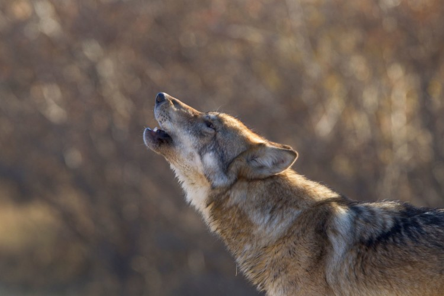

According to known data for Europe, the wolf does not pose a major threat to humans, this applies to a healthy wolf. But even if the wolf is healthy, this does not mean that it is impossible for it to attack a person. If the wolf is sick, the possibility of an attack is greater. The wolf is the direct ancestor of the dog. The beginnings of domestication date back to the Early Stone Age, that is, some 8,000 years ago. According to one of the theories, people in different parts of the Northern Hemisphere domesticated wild dogs, i.e. wolves and jackals. Large dog breeds can look a lot like wolves, but dogs never have such strong canines. In a wolf, the molars are close together, but in a dog, there are often gaps. The wolf has almost no natural enemies, but there are known cases of cannibalism. A wolf can also be infected with rabies.
